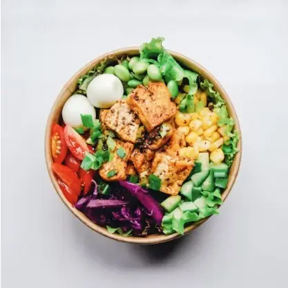

Meer dan poetshulp. Voor ondernemers.
Elke dag een beetje rust.adem.ruimte.zondag.rust.
Een Zondag is een vaste medewerker die je inboekt op je zaak. Zij poetst, kookt, strijkt, haalt de kinderen op van school en begeleidt ze, doet de boodschappen en houdt de tuin bij. In huis en uit huis, zodat je je zondag terugkrijgt.
De eerste 2 uur zijn gratis, om kennis te maken.


Thuiskomen in plaats van beginnen.
Eén vaste Zondag, op een vaste dag. Wanneer je thuiskomt, is het werk al gedaan.
Poetsen hoort er vanzelfsprekend bij. Maar ook de was, het koken, de boodschappen, de kinderen, de tuin en je post terwijl je op zakenreis bent. Alles wat op je vrije dag blijft liggen, nemen wij over. Zo krijg je je zondag terug.
Wat is een Zondag?
Zon·dag
1Een medewerker van Zondags die je inboekt voor een vast aantal uren per maand op je zaak of vennootschap. Steeds dezelfde persoon, op dezelfde dag, op hetzelfde uur.
- Door ons gescreend Selectie en opleiding
- In dienst van Zondags Geen zelfstandige
- Geboekt op je vennootschap Gewone dienstenfactuur
Ervaringen
Rika C. heeft een Zondag voor het volledige huishouden en is er zeer tevreden over.
Koen D. laat zijn Zondag elke week de boodschappen doen en koken. Het eten staat klaar wanneer hij thuiskomt.
Ontdek Zondags.
 Wat we doenPoetsen, koken, de kinderen, de tuin en je zaak.
Wat we doenPoetsen, koken, de kinderen, de tuin en je zaak.

Ons menuGezonde schotels, klaar in je koelkast. Hoe het werktDrie stappen, geboekt op je zaak.
Hoe het werktDrie stappen, geboekt op je zaak.
 Zondag wordenVast contract, vaste uren, vaste klanten.
Zondag wordenVast contract, vaste uren, vaste klanten.
Klaar voor je eigen Zondag?
Laat in twee minuten weten wat je nodig hebt. Binnen één werkdag belt een van ons je persoonlijk terug.
Vraag je Zondag aan →